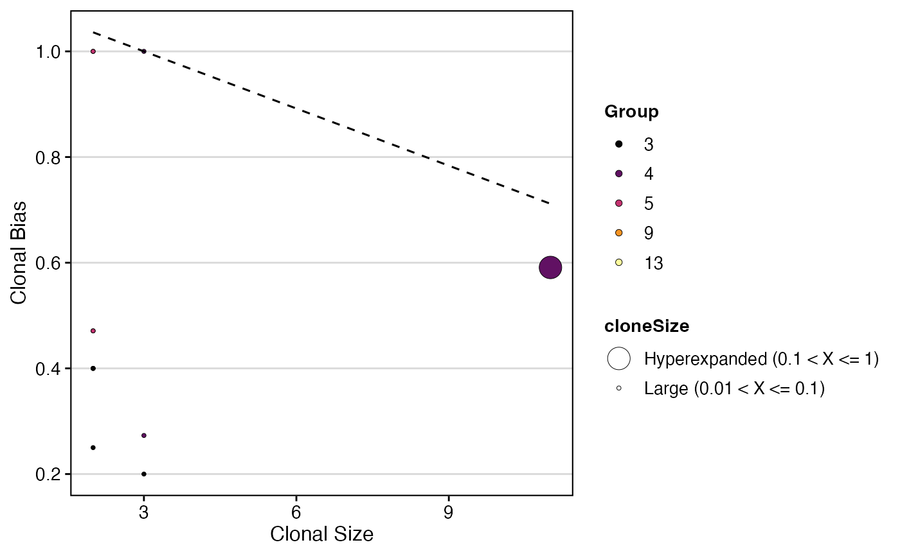

clonalBias.RdThe metric seeks to quantify how individual clones are skewed towards
a specific cellular compartment or cluster. A clonotype bias of 1* -
indicates that a clonotype is composed of cells from a single
compartment or cluster, while a clonotype bias of 0 - matches the
background subtype distribution. Please read and cite the following
manuscript
if using clonalBias.
clonalBias(
sc.data,
cloneCall = "strict",
split.by = NULL,
group.by = NULL,
n.boots = 20,
min.expand = 10,
exportTable = FALSE,
palette = "inferno"
)The single-cell object after combineExpression.
How to call the clonotype - VDJC gene (gene), CDR3 nucleotide (nt), CDR3 amino acid (aa), VDJC gene + CDR3 nucleotide (strict) or a custom variable in the data.
The variable to use for calculating the baseline frequencies. For example, "Type" for lung vs peripheral blood comparison
The variable to use for calculating bias
number of bootstraps to downsample.
clonotype frequency cut off for the purpose of comparison.
Returns the data frame used for forming the graph.
Colors to use in visualization - input any hcl.pals.
ggplot scatter plot with clonotype bias
#Making combined contig data
combined <- combineTCR(contig_list,
samples = c("P17B", "P17L", "P18B", "P18L",
"P19B","P19L", "P20B", "P20L"))
#Getting a sample of a Seurat object
scRep_example <- get(data("scRep_example"))
#Using combineExpresion()
scRep_example <- combineExpression(combined, scRep_example)
scRep_example$Patient <- substring(scRep_example$orig.ident,1,3)
#Using clonalBias()
clonalBias(scRep_example,
cloneCall = "aa",
split.by = "Patient",
group.by = "seurat_clusters",
n.boots = 5,
min.expand = 2)
#> Smoothing formula not specified. Using: y ~ qss(x, lambda = 3)
